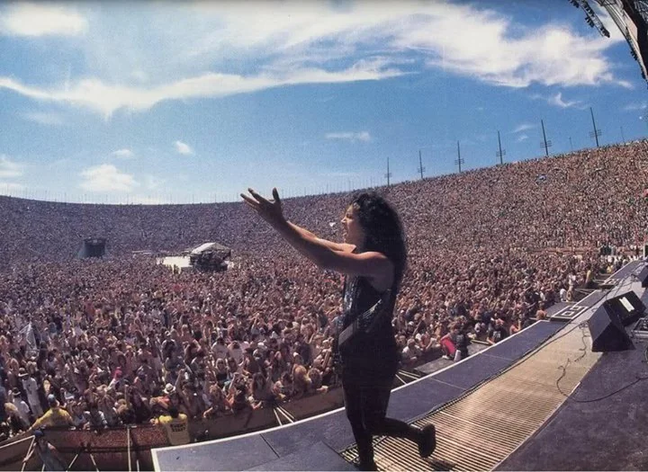
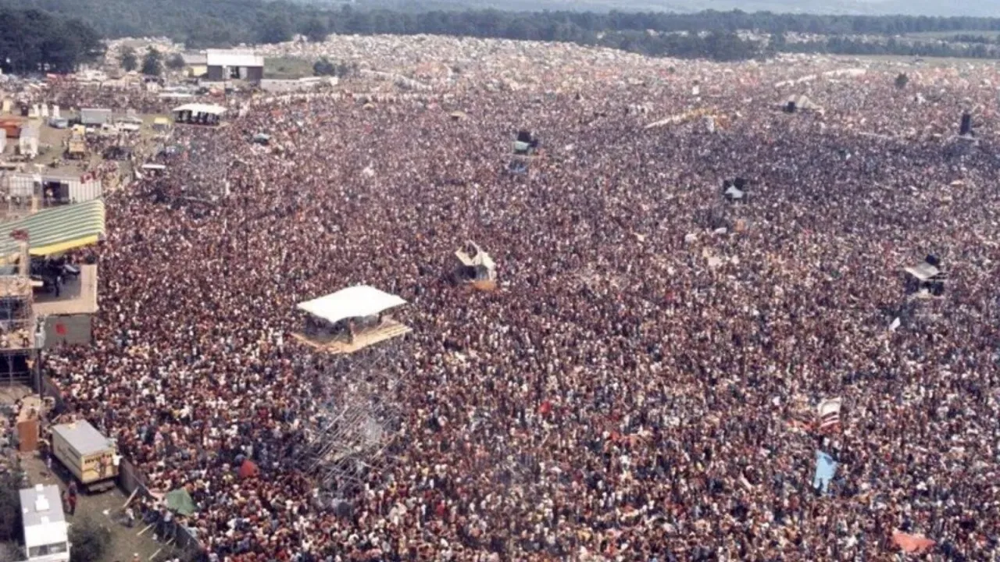

A Monsters of Rock fesztivál a világ egyik leghíresebb rock- és metalfesztiválja, ahol a Metallica is többször fellépett. A legendás rendezvény a ’80-as és ’90-es években vált ikonikus eseménnyé, ahol a legnagyobb rockzenekarok léptek fel hatalmas stadionokban és arénákban.
A Metallica részvétele a Monsters of Rock fesztiválokon mindig hatalmas közönséget vonzott, és emlékezetes élmény volt a rajongók számára. A koncertjeiken a klasszikus slágerektől kezdve a legújabb albumok dalaiig mindenki megtalálhatta a kedvencét.
A fesztivál különlegessége a rockzenei közösség ereje és az a hangulat, amely csak a nagyszabású fesztiválokon alakul ki: a rajongók együtt éneklik a slágereket, a zenekar pedig hatalmas energiával adja elő a dalokat.
Gyakran játszott dalok a fesztiválon
| Dalok |
|---|
| Enter Sandman |
| Master of Puppets |
| One |
| Seek & Destroy |
| Nothing Else Matters |
| Sad But True |
| The Unforgiven |


